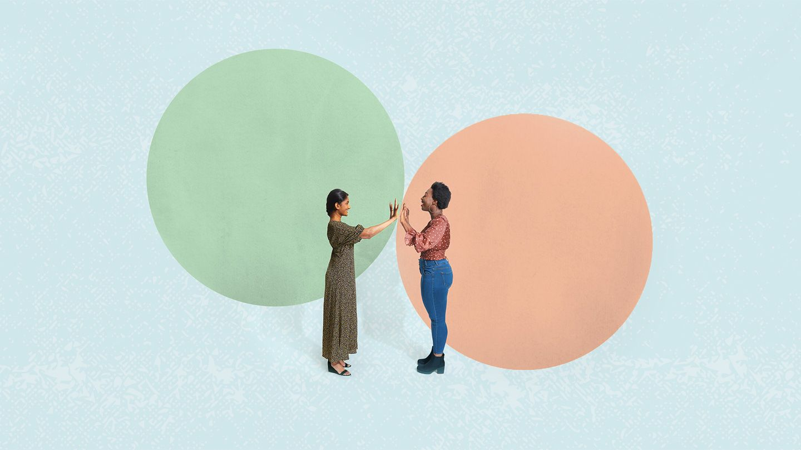
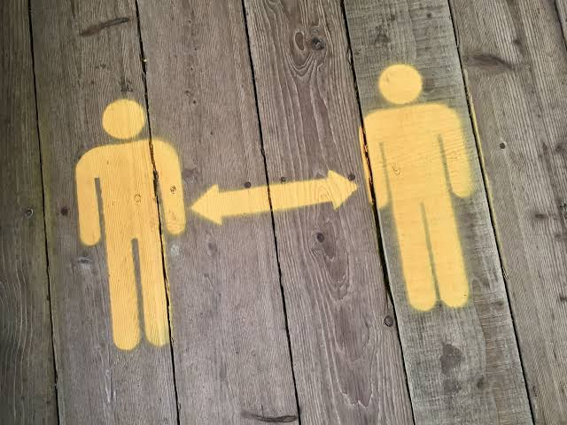

A person's boundaries are a person's limits that define how they feel safe, comfortable, and respected physically, emotionally, mentaly, etc.
Consent is an important part of a person's boundaries. Everyone must agree to what is happening in order for boundaries to not be crossed. Consent can not be given by someone else, and cannot be gotten from threatening, manipulation, force, etc. Body language can also play a role in what people really think about something that might cross their boundaries.

There are many types of boundaries:
It is important to be aware of all the boundaries that someone may have.
Boundaries are an extremely important part of human life, as it defines acceptable behavior and protects our well-being in all aspects. Boundaries improve mental health, builds trust between people, and strenghtens self-esteem. Remember that a violation of your boundaries without consent is unacceptable. Sometimes, just talking it out with the person who overstepped fixes the situation, but if that doesn't stop the unwelcome behavior, then seek a trusted adult. After all, EPS strives to be a inclusive community, and your well-being is very important to all of us.
Learn some more about boundaries here.